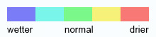

Nigeria Overview
My Dashboards
Fact Finder
Situation Room
CLEAR ALL FILTERS
Water
Water-stress on crops
Markets
General
View price for:
Grain
Productive Infrastructure
Farms
Oil refineries
Oil and Gas facilities
Power station
Roads
Rail roads
Social Institutions
Schools
Hospitals
Government buildings
Churches
Mosques
Population
Density (per sq/km)
Ethnicities
Cities
Livelihood zones
Internally displaced persons
by conflict
by natural disaster
Phase of Acute Food Insecurity
REQUEST LOCAL DATA

JAN
2015
FEB
2015
MAR
2015
APR
2015
MAY
2015
JUN
2015
JUL
2015
AUG
2015
SEP
2015
OCT
2015
NOV
2015
DEC
2015
 Fact Finder
Fact Finder